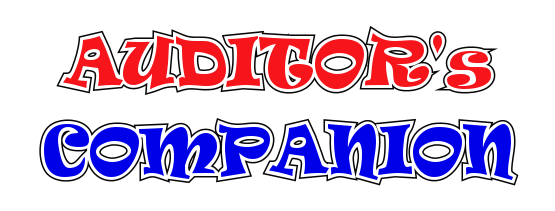
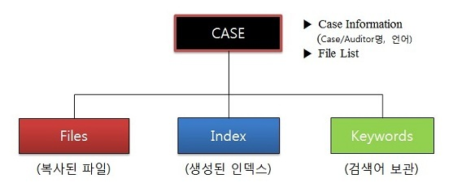

■ 폴더 구조

■ 문서 수집
파일 유형, 디렉토리 지정하여 파일 위치 탐색 (Harddisk Scanning)
원하는 파일만 쉽게 지정하여 복사
원본파일의 보존 증명 (Digital Fingerprint)
■ 텍스트 검색
Digital Format File의 텍스트 추출
빠르고 똑똑한 Indexing (한글/영어/일본어 분석기 내장)
빠르고 지능적인 검색 (자연어 검색, Scoring)
풍부한 Query Syntax